Boonta Eve Classic verseny - Mos Espa Raceway, Tatooine bolygó
Tatooine
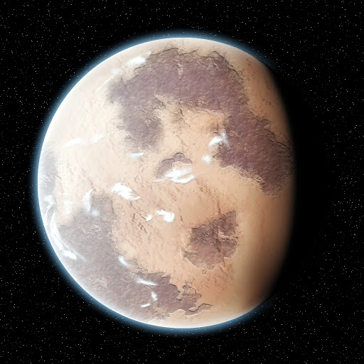A Tatooine (magyar nevén Tatuin) egy durva, homokos dűnékkel borított bolygó. A Galaxis középpontjától 43 000 fényév távolságra, a Külső Peremen, az Arkanis szektorban helyezkedik el. A Tattoine a legbelső bolygó a Tatu rendszerben. A Tatu egy kettőscsillag-rendszer, a két csillag nem túl nagy távolságra kering egymástól, így a Tatooine-on szinte mindig két nap látható.
Sok helyi telepes farmokon él és gazdálkodik. Ők az ún. párafarmerek, akik a levegőből begyűjtött párából vizet állítanak elő.
A Peremvidékre a Birodalom törvényei már nem hatnak ki, ezért a nagyobb űrkikötő-városokban (pl. Mos Esley és Mos Espa) mindenféle népség megfordul.
Csempészek, bűnözők, fegyver- és emberkereskedők bonyolítják ügyes-bajos dolgaikat a helyi pubokban. A bolygó még ezeken kívül is rengeteg veszélyt rejt.
Váratlan időpontokban lecsaphatnak kisebb-nagyobb homokviharok, az itt őslakos barbár buckalakók bárkire rátámadnak, illetve a homok hemzseg a húsevő Krayt sárkánygyíkoktól.
Soha ne hagyd hosszabb ideig őrizetlenül az űrsiklódat! Ha még is így tennél, akkor reménykedj, hogy még egyben lesz mire visszaérsz,
ugyanis a Jawa-k (magyarul: Dzsava) a legnagyobb guberáló és kereskedő faj a bolygón.
A Tatooine külön híres az itt minden évben a Huttok által megrendezésre kerülő Boonta esti fogathajtó futamról, a Boonta Eve Classic versenyről.
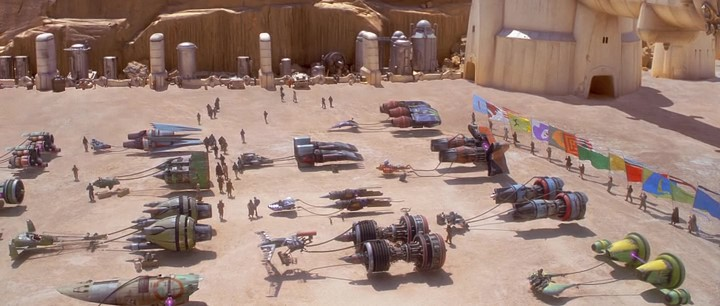Egy kis érdekesség:
A NASA Kepler űrtávcső 2011-ben felfedezett egy exobolygót, amely egy kettős csillagrendszer körül kering. A Kepler 16-b felfedezésében részt vett Fűrész Gábor magyar csillagász is. Azóta már több ilyen csillag-bolygó rendszert is találtak, ezek közül a legújabb a TOI-1338, amelyet egy 17 éves gyakornok észlelt a NASA TESS szatelitjének az adatai között.
Boonta Eve Classic
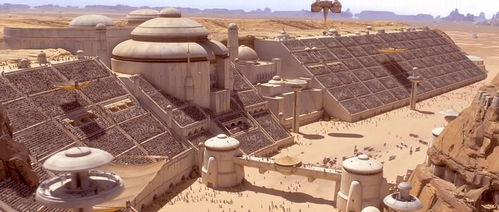A rajtrács Mos Espa külvárosi részén, a Mos Espa Nagy Arénában található. A nézők itt gyűlhetnek össze szurkolni a kedvenceiknek. Megtalálható még itt egy magas páholy is, ahonnan maga Jabba a Hutt jelzésére indulnak el a versenyzők, és három kört kell megtenniük.
Az Arénából kiérve a Csillagfény Egyenes következik, ami a sivatag egy könnyebb szakasza. Itt a legkönyebb jó pozícióba kerülni.
Pár kanyarral később a versenyzők a Gomba Fennsíkban találhatják magukat.
Ez egy sziklás térség, hatalmas kőalakzatokkal.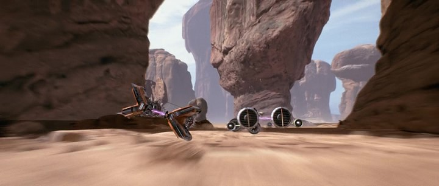
Ezután egy szűk járaton, a Szurdokon keresztül egyenesen a Dűne Tengerbe vezet. Itt található meg Jabba palotája is.
Ezt követően az egyik legkockázatosabb szakasz, az Ősi Kanyon következik, aminek a végén egy szűk résen keresztül kell átpréselni a fogatokat a pilótáknak. Ez a kőrés annyira szűk, hogy a fogatok csak az oldalukra manőverezve férnek át.
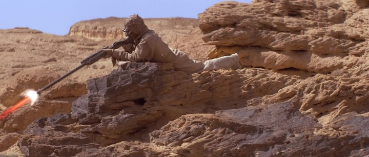Ezután egy barlangon keresztül kell továbbhaladni. Ebből kiérve, a Dűne Fordulat Kanyon jön, ahol a buckalakók előszeretettel lövöldöznek az idáig eljutott versenyzőkre.
Azoknak a versenyzőknek, akik túlélték a buckalakók lövéseit, a Bindy Bend sziklás akadályait kell kikerülniük, ami a Farokból, a Jett Kosarából és a Dugóhúzóból áll. Elhagyva a Dugóhúzót az Ördög Bütykén keresztül a versenyzők a Hutt Egyenesbe érnek, ami egyenesen az Arénába vezet vissza. Ez a pálya leggyorsabb egyenese, itt nem ritka a több mint 800 km/h-s sebesség.
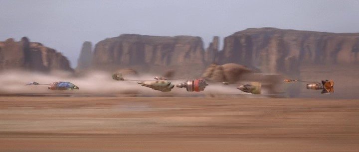Fogatok és versenyzők
| Név | Fogat típus | Kinézet |
|---|---|---|
| Aldar Beedo | MARK IV Flat-Twin Turbojet | 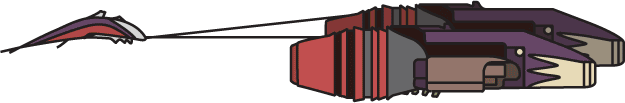 |
| Anakin Skywalker | Radon-Ulzer 620C | 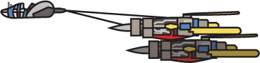 |
| Boles Roor | Quadrijet 4-Barrel 904E | 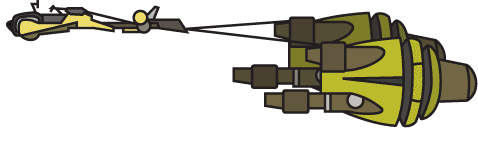 |
| Clegg Holdfast | Keizar-Volvec KV9T9-B Wasp | 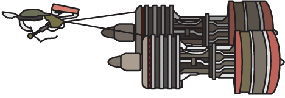 |
| Dud Bolt | Vulptereen 327 | 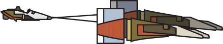 |
| Ebe Endocott | JAK Racing J930 Dash-8 | 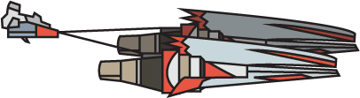 |
| Elan Mak | Kurtob KRT 410-C | 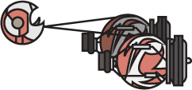 |
| Mawhonic | Galactic Power Engineering GPE-3130 | 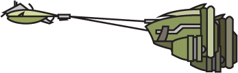 |
| Neva Kee | Farwan & Glott FG 8T8 Twin-Block 2 Special | 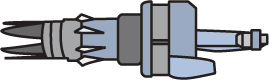 |
| Ody Mandrell | Exelbrok XL 5115 | 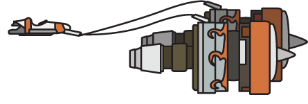 |
| Sebulba | Plug-F Mammoth | 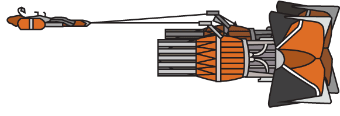 |
| Teemto Pagalies | IPG-X1131 Longtail | 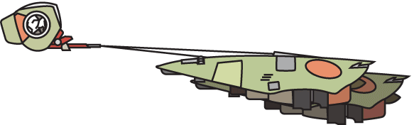 |
| Wan Sandage | Elsinore-Cordova TurboDyne 99-U | 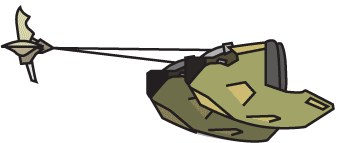 |
Kapcsolat
Ha tetszett a honlap, kérlek írj Nekünk!
A fenti "Küldés" (Send) gomb az ún. Aurebesh nyelven íródott. Ez egy a galaktikus közös nyelv jelölésére létrejött írásrendszer.
Mássalhangzókból, magánhangzókból, digrammákból és egyéb írásjelekből áll össze. Az egyes betűket szóköz választja el egymástól. Legtöbbször balról jobbra, illetve fentről lefele kell olvasni őket. Bár az írásjelek ugyanolyan méretben követik egymást, alkalmanként ki lehet emelni a főbb betűket megfordítással.